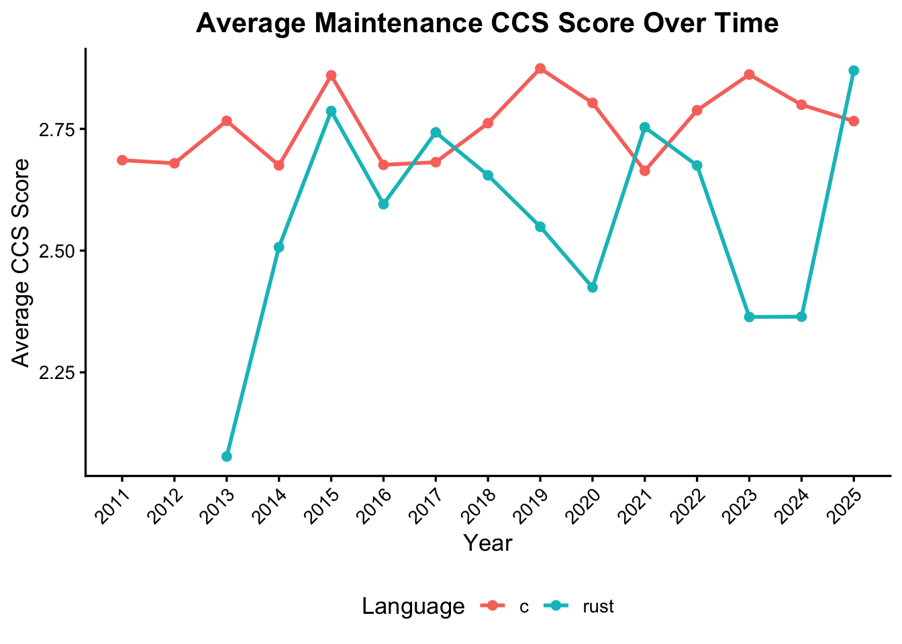
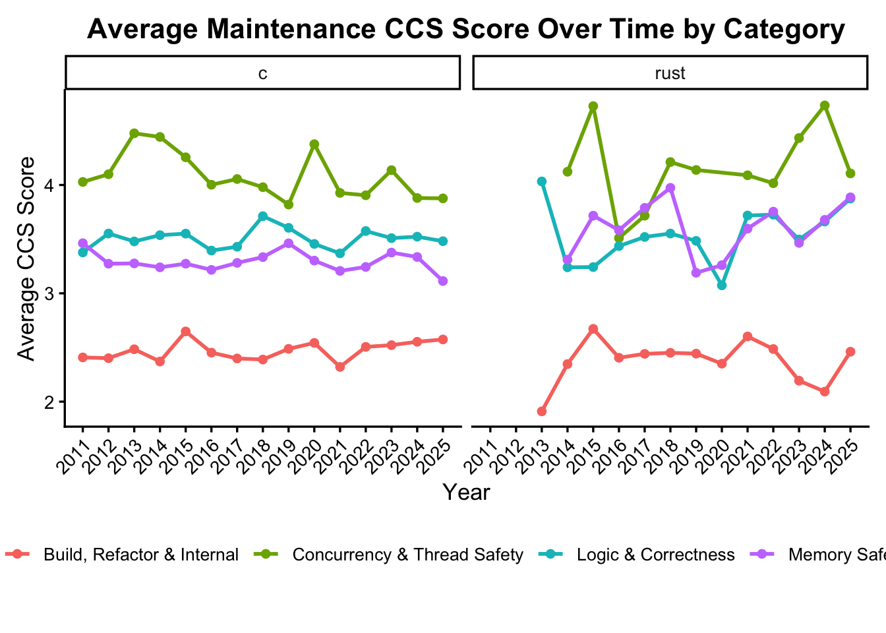

Results
1 1. What are developers focusing on (Maintenance /Feature)
1.1 Key Findings
- The data demonstrates a clear resource trade-off. In every functional domain analyzed (XML, HTTP, TLS, etc.), C projects show a deficit in Feature & Value Add work that corresponds almost directly to their surplus in Maintenance work
- The purple bars (Memory Safety) are consistently positive across all domains. This confirms that memory safety maintenance is a more common occurrence on C projects. In the XML domain (
libxml2vs.quick-xml), this tax accounts for nearly 20% of the total maintenance differential. - The Rust divident: The green bars (Feature & Value Add) are consistently negative, indicating higher activity in Rust. This suggests that the time saved by not fixing memory bugs in Rust is reinvested directly into innovation and feature development.
Strategic Implication: C forces a focus fixing the past Memory safety issues and other forms of maintenance whereas Rust enables a focus on growth and adding newer features.
2 2. Quantifying the Memory Safety Gap
This section drills down into the specific distribution of maintenance categories to quantify the magnitude of the safety difference.

2.1 Key Findings
- 3x Reduction in Memory Burden: Our classifier identified that ~12% of all commits in the C sample were related to Memory Safety & Robustness, compared to only ~4% in the Rust sample. This represents a 3x reduction in the frequency of memory-related maintenance events.
- Logic & Correctness: Interestingly, C also shows a higher proportion of general Logic & Correctness fixes. This supports the hypothesis that Rust’s expressive type system (e.g.,
Option,Result, pattern matching) prevents a class of logic errors at compile time that typically manifest as runtime bugs in C. - The Growth Gap: Rust projects show a significantly larger proportion of commits dedicated to “Feature & Value Add,” corroborating the “Rust Dividend” observed in the previous section.
3 3. Cognitive Load Analysis: The “Shift Left” Effect
Having established the volume of work, we now analyze the nature of the work using our Commit Complexity Score (CCS).
Note: CCS is a composite metric derived from code entropy (the number of files affected , churn (number of lines changed) , and amount of cognitive complexity (understand required to carry out that type of maintenance: used LLM to get the cognitive complexity score)

3.1 Key Findings
- Higher Average Complexity in Rust: Rust commits exhibit a slightly higher CCS than their C counterparts. At first glance, this might suggest Rust is “harder” to maintain. However, viewed in context with the Error Profile, a different story emerges.
- Pre-compile shift: The higher complexity per commit in Rust reflects the language’s requirement to handle correctness at write-time. Rust forces developers to satisfy the borrow checker and handle errors explicitly before merging.
- Front-Loaded vs. Back-Loaded Cost:
- Rust: Pays a small “upfront tax” in commit complexity to ensure correctness.
- C: Allows for lower-complexity commits (simpler code) that are often incorrect, resulting in a massive “backend tax” of debugging memory safety issues later.
Conclusion: The data suggests Rust does not eliminate complexity; it moves it. It shifts complexity from the Maintenance Phase (debugging crashes) to the Development Phase (satisfying the compiler), where it is cheaper and safer to manage.
4 4. Domain-Specific Consistency
To ensure these findings are not artifacts of a single outlier project, we validated the trends across distinct functional domains.

4.1 Key Findings
- Universality of the Pattern: Whether in networking (
curlvs.hyper), data storage (sqlitevs.limbo), or parsing (libxml2vs.quick-xml), the structural difference remains consistent: C projects are weighted towards corrective maintenance; Rust projects are weighted towards feature work. - The XML Extreme: The contrast is most visible in the XML parsing domain.
libxml2(a mature, widely-used C library) shows a maintenance profile dominated by Logic and Memory fixes, whilequick-xmlacts as a pure “growth” project. This validates that for parsing-heavy workloads—where memory management is most complex—the benefits of Rust are most pronounced.
Code
maintenance_avg <- commits %>%
filter(is_feature == "False") %>% # maintenance only
group_by(language,year) %>%
summarise(
avg_ccs_score = mean(ccs_score, na.rm = TRUE),
n_commits = n(),
)
maintenance_avgCode
maintenance_avg <- maintenance_avg %>%
filter(n_commits >= 3)
maintenance_avg <- commits %>%
filter(is_feature == "False") %>% # maintenance only
group_by(language,year) %>%
summarise(
avg_ccs_score = mean(ccs_score, na.rm = TRUE),
n_commits = n(),
)
maintenance_avgCode
maintenance_avg <- maintenance_avg %>%
filter(n_commits >= 3)
ggplot(
maintenance_avg %>% filter(year > 2010),
aes(x = year, y = avg_ccs_score, color = language)
) +
geom_line(linewidth = 1) +
geom_point(size = 2) +
scale_x_continuous(
breaks = seq(
min(maintenance_avg$year),
max(maintenance_avg$year),
by = 1
)
) +
labs(
title = "Average Maintenance CCS Score Over Time",
x = "Year",
y = "Average CCS Score",
color = "Language",
) +
theme_classic(base_size = 13) +
theme(
plot.title = element_text(hjust = 0.5, face = "bold"),
legend.position = "bottom",
axis.text.x = element_text(angle = 45, hjust = 1)
)
Code
#| fig-width: 14
#| fig-height: 8
#| fig-align: center
maintenance_cat_avg <- commits %>%
filter(category != "Feature & Value Add") %>% # maintenance only
filter(!is.na(category), !is.na(year), !is.na(ccs_score)) %>%
group_by(language, category, year) %>%
summarise(
avg_ccs_score = mean(ccs_score, na.rm = TRUE),
n_commits = n(),
.groups = "drop"
) %>%
filter(n_commits >= 3) # optional noise filter
ggplot(
maintenance_cat_avg %>% filter(year > 2010),
aes(x = year, y = avg_ccs_score, color = category, group = category)
) +
geom_line(linewidth = 1) +
geom_point(size = 1.8) +
facet_wrap(~ language, nrow = 1) +
scale_x_continuous(
breaks = seq(
min(maintenance_cat_avg$year, na.rm = TRUE),
max(maintenance_cat_avg$year, na.rm = TRUE),
by = 1
)
) +
labs(
title = "Average Maintenance CCS Score Over Time by Category",
x = "Year",
y = "Average CCS Score",
color = "Category"
) +
theme_classic(base_size = 13) +
theme(
plot.margin = margin(10, 10, 30, 10),
plot.title = element_text(
hjust = 0.5,
face = "bold",
size = 16
),
legend.position = "bottom", # ← vertical legend on the side
legend.title = element_text(size = 11),
legend.text = element_text(size = 10),
axis.text.x = element_text(angle = 45, hjust = 1)
)
5 5. Summary of Results
Our multi-modal classification pipeline, applied to 180,000 commits, provides strong quantitative evidence for the economic advantages of Rust:
- Reduction of Risk: Rust reduces the proportion of memory safety maintenance work by approximately 3x.
- Reallocation of Resources: There is a near-perfect correlation between the reduction in memory safety maintenance work and the increase in feature development work.
- Efficiency of Complexity: While Rust commits are marginally more complex, this upfront investment effectively eradicates entire classes of high-risk bugs, resulting in a more efficient long-term maintenance profile.